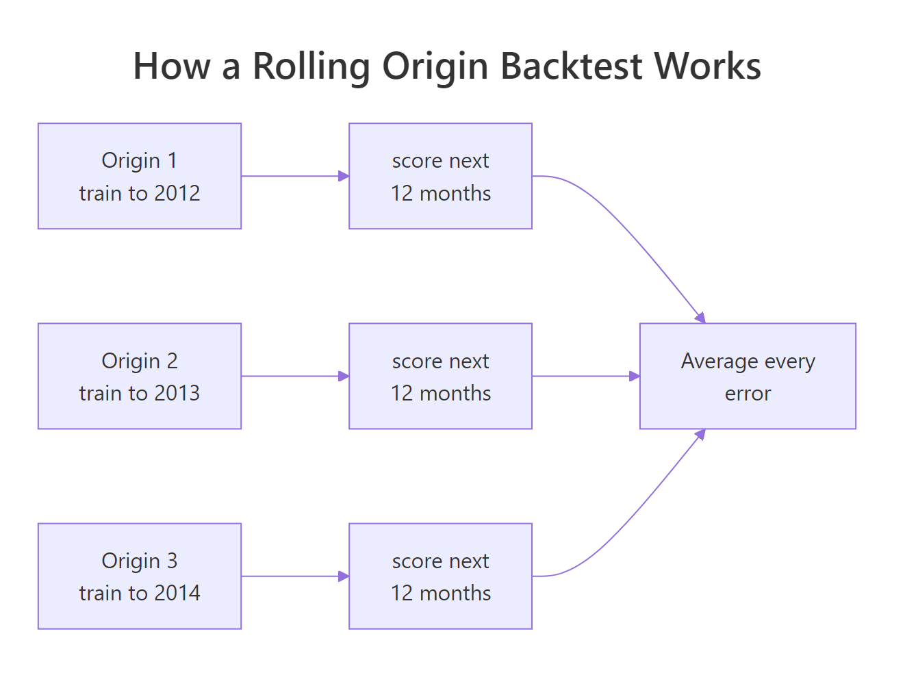
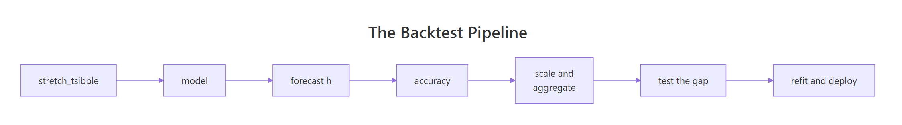
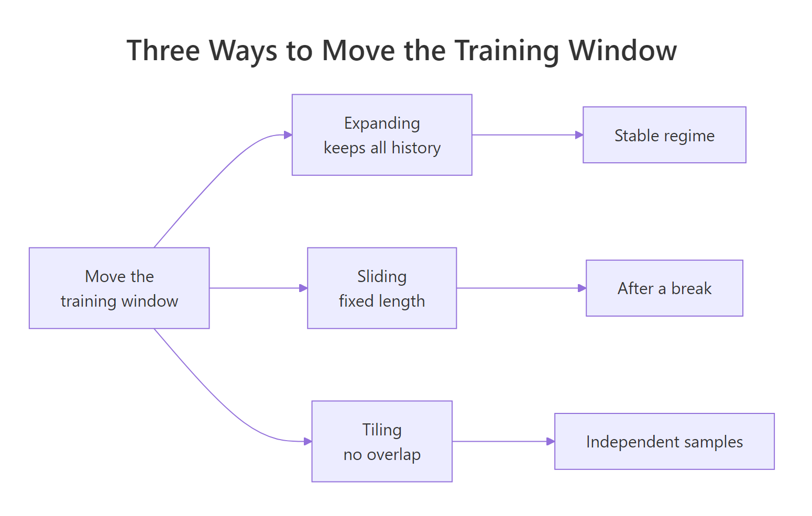
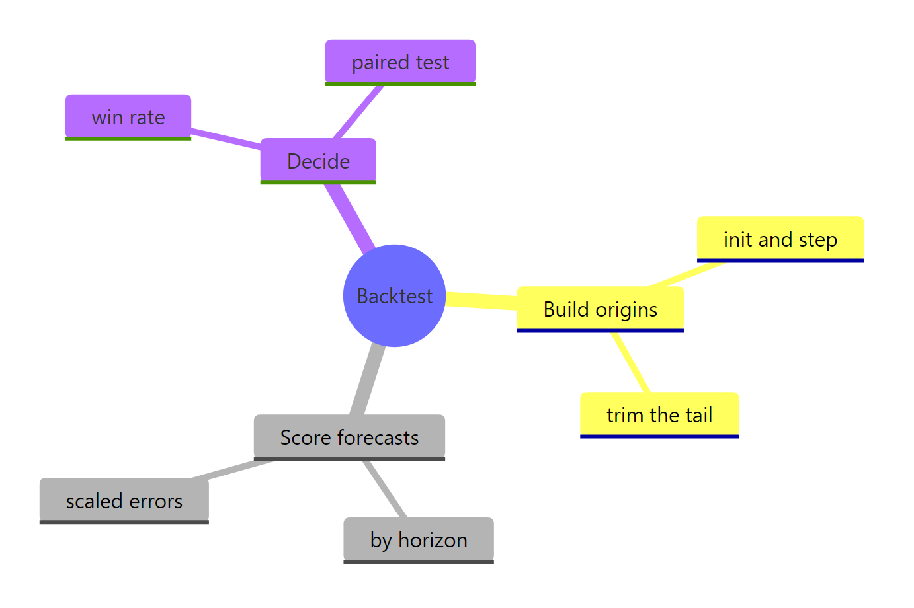

Backtesting Forecast Models in R at Scale
Backtesting a forecast means refitting your model at many past points in time and scoring the forecasts it would actually have made from each one. In R, stretch_tsibble() builds those training windows, model() fits every candidate on each window, and accuracy() collapses thousands of forecast errors into one number per model.
Why does a single train/test split give you the wrong answer?
One holdout period is a sample of size one. You score each model against a single stretch of history, and nothing in the result tells you how much came from the model and how much came from that particular stretch. Hold out 2015 and one model looks best; hold out 2016 and a different one does. The block below scores the same three models on Victorian department-store sales at three cut-offs, one year apart. Everything here uses base R plus the tidyverts stack (tsibble for the data, fable for the models).
Here is what that code did. dept pulls one monthly series (Victorian department-store turnover, 2005 to 2018) out of aus_retail and wraps it as a tsibble, a table that knows Month is its time column. The one_split() function takes a cut-off date, keeps only the months up to it as training data, fits three models on that training slice, forecasts the next 12 months, and asks accuracy() how far those forecasts landed from what really happened. yearmonth("2014 Dec") turns that string into a month value the tsibble can compare its Month column against.
The three candidates are deliberately different in character. ETS() is exponential smoothing: it tracks a level, a trend and a seasonal pattern, and R picks which of those pieces the series actually needs. TSLM() is an ordinary linear regression of turnover on a straight-line trend plus one dummy variable per calendar month. SNAIVE() is the seasonal naive benchmark, which forecasts each month as the same month one year earlier, with drift() adding an adjustment for the average yearly change. RMSE is root mean squared error: the typical size of a miss, in millions of dollars of turnover, where smaller is better.
Now read the numbers. Train to the end of 2014 and tslm wins at 21.6. Move the cut-off forward one year and ets wins at 16.0. Move it one more year and snaive wins at 15.0. Three splits, three different champions, and the "loser" in one row is the "winner" in the next.
Try it: Two earlier cut-offs are already wired up below. Run the block and check whether the ranking from the table above holds in 2011 and 2012. Then change one of the two dates to a year of your choice.
Click to reveal solution
Explanation: ets wins 2011 and snaive wins 2012, so the flip-flopping is not confined to recent years. Notice also that every RMSE here is far lower than the 2014 to 2016 numbers. That is not because the models improved, it is because those particular years were easier to forecast.
What exactly is a rolling origin backtest?
The fix is to stop treating one cut-off as special and use all of them. A forecast origin is any point in the past where you could have stood and made a forecast. A rolling origin backtest walks the origin forward through history, refits at every stop, forecasts a fixed number of months ahead, and pools every error into one score.

Figure 1: Each origin trains on everything up to a cut-off, then is scored on the months that follow.
The critical rule is the one your intuition already suspects: the scoring window always sits after the training window. That is what separates this from ordinary cross-validation, which splits the rows into folds (chunks that take turns being the test set) chosen at random. Shuffle a time series and you train on 2018 to predict 2015, which no real forecast ever gets to do.
In the tidyverts stack you do not write this loop by hand. stretch_tsibble() takes one series and returns a stack of training sets, one per origin, glued together into a single table with an id column marking which is which.
Two arguments control everything. .init = 96 says the first training window holds 96 months (8 years) of history. .step = 6 says each following window adds another 6 months. The result is 13 separate training sets stacked into 1,716 rows, and the new .id column says which training set each row belongs to.
The stacking is easier to believe once you count the rows in each window.
Window 1 has the 96 months you asked for, window 2 has 102, window 3 has 108. Each one keeps all the history of the one before it and adds six more months. That is why this is called a stretching or expanding window.
How many origins will you get? It is worth being able to predict this before you press Run, because this number multiplied by your model count is your compute bill.
The function counts the training-window sizes you can reach by starting at init and stepping by step, stopping at n_obs - h so that every origin still has a full h months of future left to be scored on. With 168 months of data, a 96-month start, 6-month steps and a 12-month horizon, that is 11 usable origins, two fewer than the 13 windows stretch_tsibble() produced. The next section deals with those two extras.
Try it: The block below stretches with a 12-month step instead of 6. Predict how many windows you will get before you run it, then check.
Click to reveal solution
Explanation: The window sizes are 96, 108, 120, 132, 144, 156 and 168 months, which is 7 windows. Doubling the step roughly halves the number of origins, and therefore roughly halves the runtime.
How do you run a full backtest and read the score?
You now have training windows. Turning them into a model ranking takes three more calls, and one cleanup step that almost every tutorial skips.

Figure 2: The five calls that turn a series into a model ranking, and the two decisions that follow.
Start with the cleanup. stretch_tsibble() happily builds a window that ends on the very last month of your data. That origin has no future left to be scored against, and the one before it has only six months of future when you asked for twelve. Look at the tail:
The data ends in December 2018. Origin 13 trains right up to the edge, so all 12 of its forecasts fall past the end of the data and score nothing. Origin 12 trains to June 2018, so only its first six forecasts can be scored. Nothing errors, nothing warns. The origin simply contributes fewer horizons than the others, which quietly tilts your average toward short-horizon forecasts that are easier to get right.
The filter keeps only origins whose training window ends at least 12 months before the data does. That leaves 11 origins, exactly the number n_origins() predicted. Every surviving origin now contributes the same 12 horizons, so the average is comparing like with like.
Now the actual backtest. Because .id is a key, one model() call fits every model on every origin, and one forecast() call produces every forecast.
Three calls did a lot of work. model() fitted 33 models (11 origins times 3 specifications), forecast(h = 12) produced 396 forecasts, and accuracy(dept) looked each one up against the real turnover for that month and pooled the errors. Passing the original dept as the second argument is what lets accuracy() find the truth: the forecasts know their dates, dept knows what actually happened on those dates. Two metrics sit beside RMSE in that table. MAE is the mean absolute error, the average size of a miss without squaring it first, so it is less swayed by one large error. MASE divides that same error by how badly a seasonal naive forecast would have done on the training data, which puts it on a scale where 1 means "no better than repeating last year"; the section on combining series returns to why that rescaling matters.
The verdict is much duller than any single split suggested, and that is the point. ets and snaive are effectively tied around 17, and tslm is clearly behind at 18.9. A sophisticated exponential smoothing model is failing to beat "the same month last year, nudged for trend". That is a genuinely useful finding, and no single split delivered it: two of the three splits earlier made ets look either much better or much worse than it really is.
Try it: dept_acc already carries every metric accuracy() computes, not just the three shown. Pull out MAPE (mean absolute percentage error) and ME (mean error, which reveals bias) from the same object.
Click to reveal solution
Explanation: Every ME is positive, which means all three models forecast too low on average by 3.7 to 6.1 units. That is a systematic bias, not random noise, and ets has the most of it despite the best MAPE. A backtest that reports only RMSE hides this completely.
Which model wins at which forecast horizon?
A single pooled RMSE answers "which model is best on average across the next twelve months". Almost nobody actually needs that. A merchandising team reordering stock needs the next one to three months; a finance team building a budget needs month twelve. Those can have different winners.
To split the score by horizon you need an h column that says how many months ahead each forecast was. The forecasts arrive in date order within each origin and model, so row_number() is enough, but the grouping has to be exactly right.
Walk through the code. group_by(.id, .model) then row_number() numbers the 12 forecasts inside each origin-and-model combination from 1 to 12. ungroup() drops the grouping, and as_fable() re-labels the result as a forecast table so accuracy() will still accept it. Then by = c("h", ".model") tells accuracy() to compute one RMSE per horizon per model instead of one per model.
Grouping by .id alone is a trap worth naming. It numbers rows 1 to 36 across all three models stacked together, so ets gets horizons 1 to 12, tslm gets 13 to 24 and snaive gets 25 to 36. The table comes out looking plausible and is completely wrong. Group by both.
.step = 6 on monthly data means every training window ends in either June or December, so h = 6 and h = 12 always land on the same two high-volume months. The h = 12 spike is partly December, not just distance.A picture makes the crossovers obvious.
The lines cross repeatedly, which is exactly what the pooled tie was hiding. snaive is dramatically better at h = 1 (12.5 against 19.2) and at h = 7, while ets is clearly better at h = 2, h = 3 and h = 8. If you only ever forecast one month ahead, the pooled table gave you the wrong recommendation.
Try it: Use acc_h to find the best model for short-range forecasting, meaning the average RMSE over h = 1 to 3.
Click to reveal solution
Explanation: ets wins the short range and snaive wins the long range, which is why they tie overall. Averaging over h = 1 to 3 also washes out the single bad h = 1 point for ets, a reminder that horizon-level numbers computed from only 11 origins are themselves noisy.
Should the window expand, slide, or tile?
So far every training window kept all the history before it. That is one of three ways to move a window through time, and the choice changes what your backtest is actually measuring.

Figure 3: Expanding keeps every past observation, sliding forgets, tiling never overlaps.
Expanding windows (stretch_tsibble()) grow: origin 5 sees everything origin 4 saw plus six more months. This matches what you do in production, where you never throw data away, and it gives later origins more training data than earlier ones.
Sliding windows (slide_tsibble()) stay a fixed length and move: origin 5 gains six months at the end and loses six from the start. Every origin gets the same amount of training data, and anything older than 96 months is dropped from the training set entirely.
Tiling windows (tile_tsibble()) are fixed length and never overlap, which makes the folds closer to statistically independent at the cost of producing very few of them.
.size = 96 replaces .init = 96, and the difference shows up in the starts column. Window 1 begins in January 2005, window 2 begins in July 2005, window 3 begins in January 2006. The start date marches forward in lockstep with the end date, so months stays pinned at 96 forever. Compare that to the expanding table earlier, where the count climbed 96, 102, 108, 114.
Because the windows carry the same ids, the same trim applies and the two schemes become directly comparable.
Forgetting old history helped ets very slightly (17.2 down to 17.1) and hurt the other two, with tslm suffering most (18.9 up to 20.7). That pattern makes sense: tslm fits a single straight trend line through whatever it is given, so a longer history gives it a steadier slope estimate. Since none of these gaps is large, expanding is the reasonable default for this series.
Try it: Shorter windows give you more of them. Build sliding windows of 60 months instead of 96 and count how many you get.
Click to reveal solution
Explanation: A 60-month window fits inside the data 19 times instead of 13, because it can finish scanning much earlier. More origins means a more stable average, but each model now sees only five years of history, which is thin for estimating twelve monthly seasonal effects.
How do you scale a backtest to many series without melting your laptop?
Everything so far ran on one series. Real forecasting jobs have hundreds or thousands, and the cost of a backtest is brutally simple arithmetic:
fits = origins x series x models
Every one of those fits is a full model estimation. Here is what the corners of that grid look like for the 168-month series you have been using.
Read the extremes. Three models on one series with a monthly step is 183 fits, which is seconds of work. The same three models across all 152 aus_retail series with a monthly step is 27,816 fits. At one second per fit that is nearly eight hours.
When the bill is too high, pull the levers in this order:
- Increase
.stepfirst. Going from 1 to 6 cuts the work by about 83 percent and costs you only precision in the average, not correctness. Overlapping origins are highly redundant anyway, since consecutive windows share almost all their data. - Cut the model list next. Backtest five candidates once to shortlist, then backtest the surviving two thoroughly.
- Raise
.initthird. Fewer origins, and the ones you drop are the least representative ones (see the section on what ruins a backtest). - Never shrink
hto save time. The horizon is set by the decision you are making, not by your compute budget.
Scaling out is a one-word change: a tsibble with a key column holds many series, and stretch_tsibble() folds every one of them.
key = Industry is the whole trick. The tsibble now holds six independent series of 108 months each, and every tidyverts verb will respect that boundary automatically. Nothing will ever average across industries by accident.
The trim is identical to the single-series case, because .id still marks the origin and the origins are shared across all six series. Five origins times six series times three models is 90 fits.
.step is the first lever anyone reaches for.The code is unchanged from the single-series version. accuracy() noticed the Industry key and reported one row per series per model, and substr() just shortens the industry names so the table fits on screen.
ets wins five of the six series and snaive takes cafes. But look at the RMSE column itself: 39.4 for cafes down to 4.5 for books. Those numbers are not on the same scale, and the next section is about why that makes averaging them dangerous.
Try it: Suppose your real panel has 20 series and you want three models with a 6-month step on 168-month histories. Work out the fit count using the helper you already wrote.
Click to reveal solution
Explanation: 11 origins times 20 series times 3 models is 660 fits. Moving to a 12-month step drops that to 360, a 45 percent saving, in exchange for basing the average on 6 origins instead of 11.
How do you combine scores across series without letting the biggest one decide?
You have six numbers per model and you want one. The obvious move, averaging the RMSEs, quietly hands the decision to whichever series sells the most.
Cafes contributes 38 percent of the total RMSE and books contributes 4 percent. In a plain average, the cafes series casts roughly nine times the vote of the books series, and it earns that power purely by being a bigger business. If your goal is "pick the model that forecasts our categories well", that weighting is not what you asked for.
The fix is to divide every error by something that carries the same units, so the result has no units at all. The natural yardstick is how badly a seasonal naive forecast would have done on that same series.
The intuition first: a scaled error of 1 means "this model was exactly as good as repeating last year's value". Below 1 means better than that, above 1 means worse. Because the comparison happens inside each series, a big series and a small series can finally be averaged.
$$\text{RMSSE} = \sqrt{\frac{\frac{1}{h}\sum_{t=T+1}^{T+h}\left(y_t - \hat{y}_t\right)^2}{\frac{1}{T-m}\sum_{t=m+1}^{T}\left(y_t - y_{t-m}\right)^2}}$$
Where:
- $y_t$ = what actually happened at time $t$
- $\hat{y}_t$ = what the model forecast for time $t$
- $h$ = number of forecast points being scored
- $T$ = number of observations in the training window
- $m$ = the seasonal period, which is 12 for monthly data
- the denominator = the average squared error of a seasonal naive forecast on the training data, which is the yardstick
If you are not interested in the algebra, skip it. The only thing you need is that fabletools computes it for you when you name the measure.
Every number now sits in the same range regardless of how big the business is. Books, which had the smallest RMSE by far, turns out to be where ets performs best of all in relative terms (0.33, meaning a third of the seasonal naive error). And tslm scores above 1 on two series, meaning its forecasts for those industries were worse than simply repeating the same month from a year earlier.
Here the two agree on the ordering, which is a comfort but not a guarantee. They disagree on the margin: mean RMSE says tslm is 66 percent worse than ets, mean RMSSE says 64 percent, and mean RMSE gets there mostly through the cafes series. Report the scaled number.
There is a third option that ignores magnitudes entirely: count wins and average ranks. If model A beats model B on 25 out of 30 series-and-origin combinations, that is persuasive no matter what the errors were.
Adding .id to the by argument is what makes this possible: instead of one score per series, you get one score per series per origin, giving 6 times 5 times 3 = 90 rows. slice_min() picks the best model in each of the 30 series-and-origin cells, and rank() scores 1 for best, 2 for second, 3 for worst inside each cell before averaging.
ets wins 23 of the 30 cells and carries a mean rank of 1.23, meaning it is nearly always first or second. tslm never wins a single cell, which is a far clearer statement than "its RMSE was 28.3".
Try it: Recompute the win counts using only the three largest series (they are already sitting in rmse_share) and see whether the story changes.
Click to reveal solution
Explanation: 12 of 15 is 80 percent, against 77 percent across all six series. The conclusion barely moves, which is reassuring: ets is not winning the panel on the strength of the small series alone.
Is the winning model actually better, or did it just get lucky?
A 77 percent win rate over 30 cells is encouraging, but 30 is not a big number. Toss a fair coin 30 times and 23 heads happens by chance often enough to be worth ruling out.
The right way to test this is to exploit the pairing. Every cell scored both models on exactly the same series over exactly the same 12 months, so instead of comparing two averages you can look at the 30 differences directly. Pairing removes the "some series and some periods are just harder" noise, which is most of the noise.
pivot_wider() puts each model's score in its own column so the three rows per cell become one row with an ets, snaive and tslm column. Then diff is negative whenever ets did better.
The average difference is -0.11 RMSSE, so ets beats snaive by about a tenth of a seasonal-naive error per cell. The standard deviation is 0.242, more than twice the size of the mean, which tells you the differences swing wildly from cell to cell. That spread is precisely why you cannot eyeball this.
Two tests, deliberately. The t.test() on the differences asks whether their true average is zero and answers no, p = 0.0189, with a confidence interval running from -0.20 to -0.02 that never touches zero. The binom.test() sign test ignores the sizes entirely and just asks whether 23 wins out of 30 could come from a coin flip; at p = 0.0052 it says no. Two different questions, same conclusion, which is much stronger than either alone.
This is also the answer to the single-series result from earlier. There, ets and snaive were tied at 17.2 against 17.1 on 11 origins, and you had no basis to prefer either. Widening to six series and 30 paired cells is what turned a coin flip into a decision.
The histogram shows the shape the summary statistics hide. Most of the mass sits just left of the dashed zero line, which is the many small ets wins, and there is a thin tail on the right where snaive won by a lot. ets wins often and narrowly; snaive wins rarely and widely.
Try it: Run the same paired comparison for ets against tslm. The cell table already has everything you need.
Click to reveal solution
Explanation: ets beats tslm in all 30 cells by an average of 0.398 RMSSE, and the p-value of 0.0000000249 reflects that. When a model loses every single cell you do not really need a test, which is the useful lesson: formal testing earns its keep on close calls, not on blowouts.
What silently ruins a backtest?
A backtest can run cleanly, print a tidy table and still be wrong. These are the failures that never raise an error.
The first is the oldest one in forecasting: reporting how well a model fits data it has already seen.
Calling accuracy() on a fitted model with no second argument scores its residuals, meaning how close it got to the data it was trained on. Compare with the backtest table from earlier: in-sample says ets 12.0, tslm 14.4, snaive 16.5, while the backtest said snaive 17.1, ets 17.2, tslm 18.9.
Two things went wrong at once. Every number is optimistic (ets by 43 percent), and the ordering flipped: in-sample crowns ets a clear winner over snaive by 4.5 points, while the backtest has them tied. Flexible models like ets have more parameters to fit to the training data, so they gain the most when the score is computed from that same data.
The second failure is starting too early. Origins near the beginning of your data train on very little history, and a model fitted on too little history can produce forecasts that are not merely poor but absurd.
The lapply() runs the same backtest three times with different starting window sizes and stacks the results. Look at the ets column: 88.5, then 14.4, then 16.0. With only 24 months of history, ets has to estimate twelve seasonal effects from two observations each, and at least one origin produced a forecast so far off that it inflated the pooled RMSE more than fivefold. The snaive column barely moves (16.3, 16.3, 16.5) because a rigid model cannot go badly wrong.
If you had run this backtest at .init = 24 you would have concluded that snaive beats ets by a factor of five. It does not. One origin, trained on two years of data, decided the ranking for all twelve.
Four more traps are worth naming even though they need your own data to demonstrate:
- Transforms computed before splitting. Standardising, log-transforming with a global lambda, deseasonalising or smoothing the whole series first leaks future information into every training window, because the parameters of that transform were estimated using data the model should not have seen. Compute the transform inside each fold.
- Regressors you would not have had. A model that uses next month's advertising spend backtests beautifully and cannot be deployed, because in production that column is itself a forecast. Either forecast the regressor too, or lag it far enough that it is genuinely known.
- Choosing the model on the full series, then backtesting only the winner. The selection step saw all the data, so the backtest is scoring a choice that already knew the answer. Put the selection inside the fold: that is why
ETS()is left to pick its own form at every origin here rather than being fixed once up front. - Refitting more often in the backtest than in production. If your job reruns quarterly but your backtest refits every month, your backtest is measuring a fresher model than the one you will actually ship.
Try it: The .init sweep results are already in init_sweep. Pull out just the snaive rows to confirm how little a rigid model cares about the starting window size.
Click to reveal solution
Explanation: Changing .init moves the ets score by 74.1 RMSE and the snaive score by 0.2. Any backtest setting that changes one model's score 370 times more than another's is not a neutral choice, it is part of the result.
Complete Example: from raw series to a deployed forecast
Here is the whole decision, end to end, using the objects already built above. Step one is to put the two scale-free verdicts side by side.
The three verdicts agree. ets has the best mean rank (1.23), the best mean RMSSE (0.616) and the highest win rate (77 percent), and the paired tests from the previous section confirmed the gap over snaive is unlikely to be luck (p = 0.019 on the differences, p = 0.005 on the signs). tslm never won a cell and scores above 1, so it loses to seasonal naive on average and should not be shipped.
Step two is the one people forget: the model you deploy is refit on everything, including the months the backtest held out. The backtest chose the recipe, not the final parameters.
model() on the untouched vic fits one ETS per industry using all 108 months, and forecast(h = 12) projects each one through 2019. The department-store numbers show the seasonal shape you would expect: a January that is still elevated from the Christmas run, a February trough, then a climb back.
What the backtest bought you is the sentence you can now say out loud: across six categories and five origins, an automatically selected ETS beat both a seasonal naive benchmark and a trend-plus-season regression 77 percent of the time, by roughly a tenth of a seasonal-naive error, and the margin held up under a paired test. That is a defensible model choice, not a hunch.
Practice Exercises
These combine several ideas from the tutorial. Every object they need (dept, vic, vic_fc, cell, dept_slide) is already in your session.
Exercise 1: Backtest with a coarser step and trim it correctly
Build an expanding backtest of dept with .init = 96 and .step = 12, trim the origins that do not have a full 12 months of future, then fit ets, tslm and snaive and rank them by RMSE. Compare your ranking to the .step = 6 result (ets 17.2, snaive 17.1, tslm 18.9).
Click to reveal solution
Explanation: Seven raw windows trim to six usable ones. The ranking now puts ets ahead of snaive rather than a hair behind, which is the honest reading of a 6-origin backtest: with this few origins the top two are within noise of each other, exactly as the 11-origin version suggested. tslm stays last either way, and that is the conclusion you can actually rely on.
Exercise 2: Does the ranking change between short and long horizons?
Using vic_fc, compute a per-cell RMSSE that is also broken out by horizon, bucket the horizons into h = 1 to 6 and h = 7 to 12, then report the mean rank of each model within each bucket. Does the same model lead in both?
Click to reveal solution
Explanation: ets leads both buckets, so the overall recommendation survives. But its edge shrinks with distance: mean rank 1.33 versus 2.00 in the near term, narrowing to 1.67 versus 1.70 further out, which is effectively a tie. The practical reading is that ets earns its keep on short-range forecasts, and beyond six months you could ship the far cheaper seasonal naive with little loss.
Exercise 3: Would you trust this result from one series alone?
Take the sliding-window backtest of dept (dept_slide, 11 origins), score ets and snaive per origin, then run a sign test on how often ets won. Compare the p-value to the 0.0052 you got from the six-series panel.
Click to reveal solution
Explanation: ets won 7 of 11 origins, a 64 percent win rate that looks similar to the panel's 77 percent, but the p-value is 0.5488. Eleven observations simply cannot separate a real edge from a coin flip. This is the argument for backtesting at scale in one number: the six-series panel did not make the model better, it made the evidence strong enough to act on.
Frequently Asked Questions
How many origins do I actually need?
Enough that the winner is not decided by two or three folds. As a rough guide, aim for at least 20 origin-and-series cells before you trust a close call, and remember that widening across series is usually cheaper than shortening .step, because extra series add genuinely new information while extra origins mostly re-use the same history.
Should .step always be 1?
No. Consecutive origins share nearly all their training data, so their errors are heavily correlated and the twentieth origin adds far less information than the first. Stepping by a quarter of your seasonal period is a good default, and if you step by exactly the seasonal period every origin ends in the same calendar month, which confounds horizon with season.
Does a good backtest score mean my model is good?
It means it is better than the alternatives you tested, on the history you tested. That is all. Always include a naive benchmark such as SNAIVE() so the number has a floor, and treat any scaled error above 1 as a failure regardless of how good the RMSE looks.
Can I backtest a model that needs future regressors?
Yes, but you must supply the regressor values for each forecast window through the new_data argument of forecast(), and those values have to be ones you would genuinely have had at the origin. Feeding in the true future values measures a model you cannot deploy.
Should the deployed model be refit on all the data?
Yes. The backtest exists to choose the model specification, not to produce the forecast you ship. Once you have chosen, refit on the full history so the model sees the most recent months, which are usually the most relevant ones.
How is this different from tsCV() in the forecast package?
tsCV() does the same rolling-origin job for ts objects and returns a matrix of errors that you summarise yourself. The tsibble approach shown here works on tidy data frames, handles many series through the key column without a loop, and returns errors already labelled by series, origin and model, which is what makes aggregation and paired testing straightforward. Use tsCV() for a quick single-series check and this pipeline when you are comparing models across a panel.
Summary

Figure 4: The whole backtest in one picture: build origins, score forecasts, decide.
| Decision | Tool | Gotcha to avoid |
|---|---|---|
| Build expanding origins | stretch_tsibble(.init, .step) |
The last origins have no future to be scored on, so trim them |
| Build fixed-length origins | slide_tsibble(.size, .step) |
Short windows starve seasonal models |
| Fit every model on every origin | model() on the stacked tsibble |
Libraries and specifications must be identical across origins |
| Score the forecasts | accuracy(fc, original_data) |
Never score against the stacked data, always the original |
| Score by horizon | group_by(.id, .model) then row_number() |
Grouping by .id alone silently mixes the models together |
| Combine across series | RMSSE or MASE, plus win rate |
Plain RMSE hands the vote to your biggest series |
| Confirm the winner | Paired t.test() and binom.test() |
Overlapping folds are not fully independent |
| Ship it | Refit on all data, then forecast() |
The backtest picks the recipe, not the final parameters |
The short version: one holdout tells you about one year, a rolling backtest tells you about your model, and a rolling backtest across many series tells you enough to defend the decision.
References
- Hyndman, R.J. & Athanasopoulos, G. - Forecasting: Principles and Practice, 3rd edition, Section 5.10: Time series cross-validation. Link
- Hyndman, R.J. & Athanasopoulos, G. - Forecasting: Principles and Practice, 3rd edition, Section 5.8: Evaluating point forecast accuracy. Link
- tsibble documentation -
stretch_tsibble()reference. Link - tsibble documentation -
slide_tsibble()reference. Link - fabletools documentation -
accuracy()and the built-in accuracy measures. Link - Hyndman, R.J. - Time series cross-validation using fable (2021). Link
- Hyndman, R.J. & Koehler, A.B. - Another look at measures of forecast accuracy, International Journal of Forecasting 22(4), 2006. The paper that introduced scaled errors. Link
- Hewamalage, H., Ackermann, K. & Bergmeir, C. - Forecast evaluation for data scientists: common pitfalls and best practices, Data Mining and Knowledge Discovery, 2023. Link
- forecast package documentation -
dm.test(), the Diebold-Mariano test for comparing forecast accuracy. Link - Svetunkov, I. - Rolling Origin vignette, greybox package. A more parameterised treatment of origin design. Link
Continue Learning
- Time Series Cross-Validation in R with tsCV() - the same rolling-origin idea using the forecast package on a single
tsobject, with a closer look at how errors grow with horizon. - Forecast Accuracy in R: MAE, RMSE, MAPE, and MASE - what each metric measures and when it misleads, which is the vocabulary this tutorial assumes.
- Global Forecasting Models in R - what to do once your backtest spans hundreds of series and one model per series stops making sense.